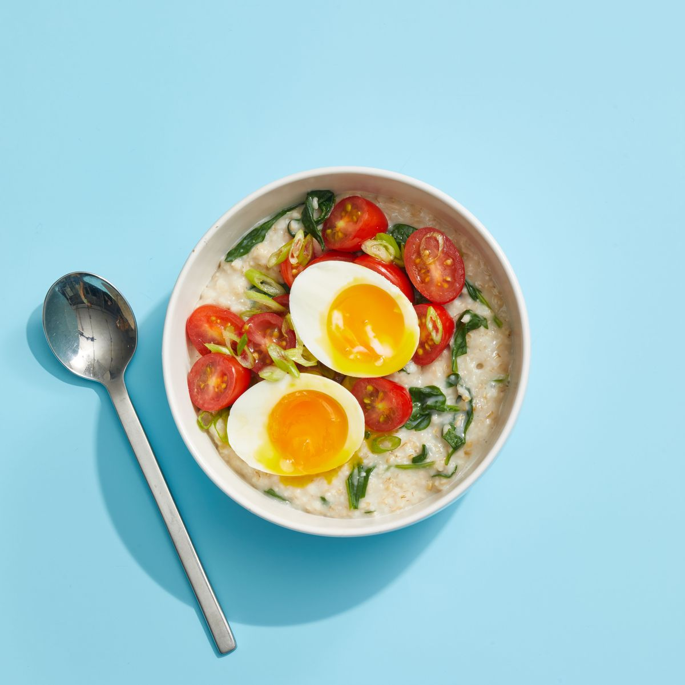

Oatmeal with Greens, Tomatoes, and Egg

Description
Ingredients
- 1/4 c. quick-cooking steel-cut oats
- Kosher salt
- 1/4 c. grape tomatoes, sliced in half
- 1 scallion, thinly sliced
- 2 tsp. olive oil
- 3/4 c. baby spinach
- Soft-boiled egg, halved
Steps
- In a small saucepan, bring 3/4 cups of water to a boil.Add oats and pinch of salt and cook, stirring occasionally, until tender, 5 to 7 minutes.
- Meanwhile, in small bowl, toss tomatoes, scallion, oil, and pinch of salt.
- Remove oatmeal from heat and fold in spinach to wilt. Transfer to serving bowl, top with tomatoes and egg.
Go Back